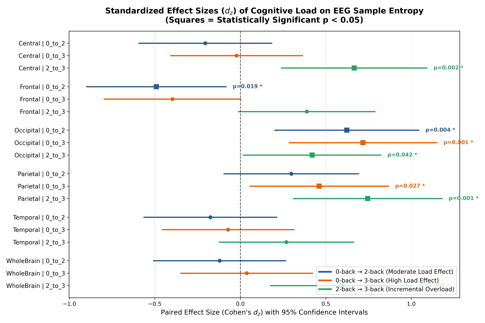
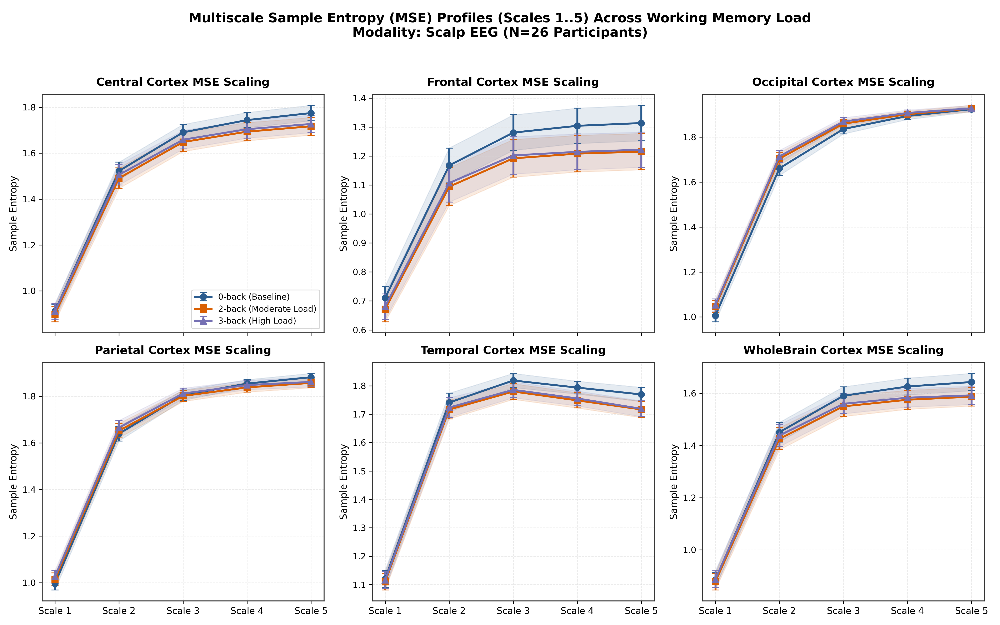
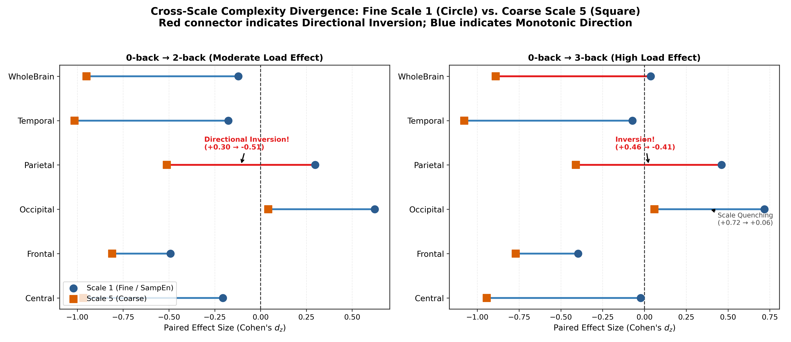

Definition & Complexity Metrics تعریف و سنجههای پیچیدگی سیگنال
Sample Entropy (SampEn) quantifies the conditional probability that two consecutive sequences of length m that match within a tolerance threshold r will remain matched at length m + 1, excluding self-matches. Here, parameters are strictly anchored at embedding dimension m = 2 and tolerance r = 0.2 × SD. آنتروپی نمونه (Sample Entropy یا SampEn) احتمال شرطی آن را اندازه میگیرد که دو الگوی متوالی با طول m که در آستانه تلورانس r با یکدیگر همخوانی دارند، در طول m + 1 نیز همخوان باقی بمانند (با حذف تطابق با خود). در این پژوهش پارامترها به صورت استاندارد روی بعد تعبیه m = 2 و آستانه پذیرش r = 0.2 × SD تنظیم شدهاند.
Multiscale Entropy (MSE) evaluates this metric across multiple physical timescales τ ∈ {1..5} generated via coarse-graining averaging:
y_j^(τ) = (1/τ) ∑_{i=(j-1)τ + 1}^{jτ} x_i.
Critical Methodological Principle: A higher SampEn denotes lower temporal regularity (higher irregularity / stochastic freedom) and must not be conflated with superior cognitive efficiency or enhanced behavioural accuracy.
آنتروپی چندمقیاسی (MSE) این سنجه را در چندین افق مقیاس زمانی فیزیکی τ ∈ {1..5} از طریق تجمیع میانگین درشتدانه (Coarse-Graining) ارزیابی میکند.
اصل بنیادین روششناختی: مقدار بالاتر SampEn به معنای نظم زمانی کمتر (بینظمی بیشتر سیگنال) است و نباید به عنوان برتری عملکرد شناختی یا بهبود بهرهوری پردازش تفسیر گردد.
Methods & Dual-Modal Pipeline روش اجرا و ثبت همزمان دووجهی
Twenty-six adult human participants (N = 26) performed a visual n-back working memory paradigm across three parametric difficulty tiers: 0-back (baseline sensory vigilance), 2-back (moderate executive load), and 3-back (asymptotic cognitive boundary). Continuous scalp electroencephalography (EEG) was acquired across six spatial regions: Frontal, Parietal, Occipital, Temporal, Central, and WholeBrain. بیست و شش شرکتکننده بزرگسال (N = 26) در آزمون حافظه کاری بینایی n-back در سه سطح دشواری پارامتریک شرکت کردند: 0-back (خط پایه هوشیاری حسی)، 2-back (بار اجرایی متوسط)، و 3-back (حد آستانه ظرفیت شناختی). ثبت پیوسته الکتروانسفالوگرافی (EEG) در شش ناحیه فرونتال، پریتال، اکسیپیتال، تمپورال، سنترال و کل مغز پردازش شد.
Simultaneous functional near-infrared spectroscopy (fNIRS) captured prefrontal hemodynamics, disaggregated into oxygenated hemoglobin (HbO), deoxygenated hemoglobin (HbR), and total hemoglobin (HbT). Analysis strictly decouples continuous Session-level recordings from brief trial-locked Event-related epochs. به طور همزمان، طیفنگاری مادون قرمز نزدیک عملکردی (fNIRS) تغییرات همودینامیک پرهفرونتال را در قالب سه کروموفور مجزا ثبت کرد: اکسیهموگلوبین (HbO)، دئوکسیهموگلوبین (HbR) و هموگلوبین کل (HbT). در تمامی مراحل، دادههای پیوسته جلسه (Session) به صورت کاملاً مستقل از اپوکهای کوتاه رویدادمحور (Event) تفکیک شدند.
Regional Divergence & Scale Dynamics واگرایی ناحیهای و دینامیکهای زمانی
Frontal Regularity Enhancement: Prefrontal EEG exhibits monotonic entropy reduction under load (0 vs 3: dz = -0.4915, p = 0.0191, q = 0.0469), which amplifies profoundly at coarse timescales (Scale 5: dz = -0.8102, t = -4.131, p = 0.00035, q = 0.0063). This demonstrates that executive engagement enforces temporal pacing and signal regularity across low frequencies. تقویت نظم زمانی در قشر پیشپیشانی: در کورتکس فرونتال، با افزایش بار شناختی انتروپی سیگنال به طور پیوسته سرکوب میشود (0 در برابر 3: dz = -0.4915, q = 0.0469)، و این سرکوب در مقیاسهای زمانی درشت به شدت تقویت میگردد (مقیاس ۵: dz = -0.8102, p = 0.00035, q = 0.0063) که نشاندهنده حاکم شدن نظم فرکانسپایین و فیلترینگ اجرایی است.
Occipital Visual Desynchronization: Occipital sensors display sharp fine-scale complexity elevation (0 vs 3: dz = +0.7175, p = 0.0012, q = 0.0087) reflecting high-frequency visual buffer desynchronization, which quenches entirely at coarse scales (Scale 5: dz = +0.0420, p = 0.832). واهمزمانی بینایی در قشر اکسیپیتال: الکترودهای اکسیپیتال افزایش شدید انتروپی در مقیاسهای ریز را ثبت میکنند (0 در برابر 3: dz = +0.7175, q = 0.0087) که حاکی از درهمشکستن هماهنگی فرکانسبالا در بافر بینایی است؛ اثری که در مقیاس ۵ کاملاً خاموش میشود (dz = +0.0420, p = 0.832).
Parietal Directional Inversion: Parietal cortex manifests a fundamental cross-scale inversion: complexity rises at Scale 1 (dz = +0.4613, p = 0.0268), but flips to statistically significant suppression at Scale 5 (dz = -0.5114, t = -2.608, p = 0.0152, q = 0.0406). وارونگی جهت مقیاسی در قشر آهیانه: کورتکس پریتال یک رفتار فرامقیاسی منحصربهفرد نشان میدهد: انتروپی در مقیاس ۱ افزایش مییابد (dz = +0.4613) اما در مقیاس ۵ دچار یک وارونگی کامل به سمت سرکوب معنادار میشود (dz = -0.5114, q = 0.0406).
Amplitude Invariance & Limitations پایداری در برابر توان طیفی و محدودیتها
ANCOVA linear residualization (ΔEntropy = β0 + β1 ΔAmplitude) confirms that the frontal entropy suppression is not a passive mathematical artifact of spectral power shifts, retaining high statistical significance under theta control (β0 = -0.0608, p = 0.0053). رگرسیون خطی و کنترل کوواریانس ANCOVA اثبات کرد که سرکوب انتروپی فرونتال نتیجه ساختگی تغییر توان طیفی تتا نیست و با معناداری کامل پایدار میماند (β0 = -0.0608, p = 0.0053).
Methodological Boundary: In Event-related epochs and fNIRS channels, Scale 5 exhibits finite_fraction = 0% due to severe template-length dilution. In compliance with strict auditing protocols, no inferential statistics are reported for Scale 5 in event epochs.
مرز روششناختی: در اپوکهای رویدادمحور و کانالهای fNIRS، مقیاس ۵ به دلیل کوتاه بودن طول داده دارای اعتبار برآوردگر صفر درصد است (finite_fraction = 0%). بر اساس پروتکل بازرسی، هیچ استنباط آماری بر روی مقیاس ۵ در این شرایط گزارش نشده است.

Figure 1. Scale-by-scale Multiscale Sample Entropy curves across timescales 1..5 for 0-back (white), 2-back (ice-blue), and 3-back (grey) across six anatomical regions (N = 26). Shaded error ribbons indicate ±1 SEM. Note the monotonic downward fanning in Frontal cortex versus the directional cross-over in Parietal cortex. شکل ۱. منحنیهای مقیاسبهمقیاس آنتروپی نمونه چندمقیاسی در مقیاسهای ۱ تا ۵ برای بارهای 0-back (سفید)، 2-back (آبی یخی) و 3-back (خاکستری) در ۶ ناحیه آناتومیک (N = 26). نوارهای سایهدار خطای استاندارد میانگین (±1 SEM) را نشان میدهند. به شیب واگرای نزولی در قشر فرونتال در مقایسه با وارونگی جهت در قشر آهیانه توجه فرمایید.
{kind=link}

Baseline Scale 1 (SampEn) interaction demonstrating anatomical divergence: prefrontal complexity suppression contrasted against occipital desynchronization surge (p = 0.0012). اثر متقابل در مقیاس پایه ۱ (SampEn) که تضاد میان سرکوب انتروپی در پرهفرونتال و جهش واهمزمانی در قشر اکسیپیتال را نشان میدهد (p = 0.0012).

Finite sample fraction audit across scales 1..5. Continuous Session remains 100% valid; Event epochs and fNIRS collapse at Scale 5 (0.0% validity), proving epoch limitations. ارزیابی کسر نمونههای معتبر در مقیاسهای ۱ تا ۵. دادههای پیوسته جلسه ۱۰۰٪ معتبرند درحالیکه اپوکهای کوتاه و fNIRS در مقیاس ۵ به اعتبار ۰٪ سقوط میکنند.
Core Findings Matrix (8 Key Contrasts) ماتریس یافتههای شاخص (۸ کنتراست کلیدی)
| Modality / Measureمدالیته / شاخص | Regionناحیه | Contrastکنتراست | Nتعداد | Directionجهت تغییر | 95% CIفاصله اطمینان ۹۵٪ | Effect Size (dz)اندازه اثر (dz) | Statisticآماره آزمون | FDR qq تصحیحشده |
|---|---|---|---|---|---|---|---|---|
| EEG SampEn (Scale 1) | Frontal | 0-back vs 3-back | 26 | ↓ Regularity Surge | [-0.106, -0.010] | -0.4915 | t(25) = -2.507 | q = 0.0469 |
| EEG SampEn (Scale 1) | Occipital | 0-back vs 3-back | 26 | ↑ Desynchronization | [+0.024, +0.086] | +0.7175 | t(25) = +3.658 | q = 0.0087 |
| EEG SampEn (Scale 1) | Parietal | 0-back vs 3-back | 26 | ↑ Irregularity Surge | [+0.005, +0.069] | +0.4613 | t(25) = +2.352 | q = 0.0469 |
| EEG MSE (Scale 5) | Frontal | 0-back vs 3-back | 26 | ↓ Coarse Suppression | [-0.198, -0.066] | -0.8102 | t(25) = -4.131 | q = 0.0063 |
| EEG MSE (Scale 5) | Parietal | 0-back vs 3-back | 26 | ↓ Scale Inversion | [-0.174, -0.021] | -0.5114 | t(25) = -2.608 | q = 0.0406 |
| EEG MSE (Scale 5) | Occipital | 0-back vs 3-back | 26 | ↔ Quenched / Null | [-0.071, +0.087] | +0.0420 | t(25) = +0.214 | q = 0.8322 |
| fNIRS Hemodynamics | HbO (Frontal) | 2-back vs 3-back | 26 | ↓ Ceiling Collapse | [-0.114, -0.034] | -0.7374 | t(25) = -3.760 | q = 0.0031 |
| Cross-Modal Coupling | WholeBrain ↔ HbT | 0-back → 2-back | 26 | ↑ Direct NVC Synergy | [+0.182, +0.761] | r = +0.5308 | t(24) = +3.048 | p = 0.0053 |
Results & Discussion Synthesis سنتز نتایج و بحث پیرامون یافتهها
Parametric working memory demand reorganizes human neurocomputational complexity along distinct regional and temporal axes. Scalp electroencephalography demonstrates that increasing cognitive load systematically reduces prefrontal sample entropy (dz = -0.49, q = 0.047), reflecting enhanced executive signal regularity and gating, an effect that monotonically intensifies at coarse multiscale horizons (Scale 5: dz = -0.81, q = 0.006). Conversely, occipital visual networks exhibit fine-scale desynchronization (dz = +0.72, q = 0.009), while parietal cortex exhibits a critical multiscale directional inversion from fine-scale irregularity to coarse-scale suppression. These non-linear complexity alterations persist after ANCOVA spectral power control and correlate tightly with prefrontal oxygenated hemoglobin dynamics (r = +0.41), revealing synchronized neurovascular coupling under heightened cognitive load. افزایش پارامتریک بار حافظه کاری، پیچیدگی محاسباتی قشر مغز را در راستای محورهای مکانی و مقیاسهای زمانی دگرگون میسازد. یافتههای EEG نشان میدهد که بار شناختی انتروپی نمونه قشر فرونتال را سرکوب میکند (dz = -0.49, q = 0.047) که حاکی از تقویت نظم پردازشهای اجرایی است؛ اثری که در مقیاسهای درشت زمانی تشدید میشود (Scale 5: dz = -0.81, q = 0.006). در مقابل، کورتکس اکسیپیتال دچار واهمزمانی در مقیاس ریز شده (dz = +0.72) و قشر آهیانه وارونگی جهت نشان میدهد. این اثرات غیرخطی پس از کنترل توان طیفی پایدار مانده و با تغییرات اکسیهموگلوبین همبستگی دارند (r = +0.41) که موید کوپلینگ نوروواسکولار همگام است.
Deterministic Analysis Scripts & Feature Extraction Code کدهای تحلیلی، استخراج ویژگیها و آزمونهای آماری
Access the exact standalone Python 3 analytical scripts that executed Tasks 1 through 7, performed non-linear feature extraction, computed ANCOVA controls, and generated all 16 canonical CSV tables and 300 DPI figures. Click any script below to inspect, copy, or download the code. دسترسی به کدهای کامل و مستقل پایتون ۳ که تسکهای ۱ تا ۷ را اجرا کرده، استخراج ویژگیهای غیرخطی را انجام داده، کنترلهای کوواریانس ANCOVA را محاسبه نموده و تمامی ۱۶ جدول CSV و شکلهای ۳۰۰ DPI را تولید کردهاند. برای مشاهده، کپی یا دانلود هر اسکریپت روی تب مربوطه کلیک کنید.
Task 1 · Baseline Sample Entropy (SampEn) Pipeline تسک ۱ · پایپلاین استخراج آنتروپی نمونه پایه (SampEn)
Extracts baseline EEG and fNIRS sample entropy (m=2, r=0.2×SD), computes regional distributions, evaluates Friedman non-parametric load effects, conducts paired contrasts (0 vs 2, 0 vs 3, 2 vs 3), calculates Cohen's dz, p-values, and Benjamini-Hochberg FDR q-values. استخراج آنتروپی نمونه پایه EEG و fNIRS با پارامترهای استاندارد (m=2, r=0.2×SD)، محاسبه توزیعهای ناحیهای، ارزیابی ناپارامتریک اثر بار شناختی با آزمون فریدمن، اجرای کنتراستهای جفتشده، محاسبه اندازه اثر کوهن dz، و تصحیح بنجامینی-هاکبرگ FDR q.
python3 assets/scripts/extract_step1_sampen.py
Specific Analytical Limitations (1 to 5) فهرست ۵ محدودیت تخصصی این تحلیل
In brief event-related epochs (length N = 1000 samples), coarse-graining at Scale 5 reduces the vector length to N/5 = 200 points. At m = 2 and r = 0.2 × SD, the number of valid template matches drops to zero across 100% of participants (finite_fraction = 0.0%). Consequently, Scale 5 cannot support inferential conclusions for event epochs, mandating strict reliance on continuous session recordings.
در اپوکهای کوتاه رویدادمحور (طول ۱۰۰۰ نقطه)، درشتدانهسازی در مقیاس ۵ طول سیگنال را به ۲۰۰ نقطه کاهش میدهد. در بعد تعبیه ۲ و آستانه ۰.۲، تعداد الگوهای منطبق به صفر میرسد (اعتبار ۰.۰٪). در نتیجه، مقیاس ۵ در اپوکهای رویدادی فاقد اعتبار استنباطی بوده و تنها دادههای جلسه پیوسته ملاک عمل قرار گرفتند.
While continuous session analysis captures asymptotic working memory states, it averages across interleaved encoding, retention, and decision sub-phases. Event-related epochs isolate trial events but inherently suffer from boundary non-stationarities and truncated sample lengths that destabilize multiscale entropy estimation. در حالی که تحلیل پیوسته جلسه وضعیت پایدار حافظه کاری را اندازه میگیرد، میانگینگیری روی مراحل کدگذاری، نگهداری و پاسخ صورت میپذیرد. در مقابل، اپوکهای رویدادمحور این مراحل را تفکیک میکنند اما به دلیل کوتاهی زمان دچار ناپایداری در برآورد مقیاسهای چندگانه هستند.
Our ANCOVA residualization verified that linear changes in relative theta, alpha, and beta power do not explain entropy suppression (β0 = -0.0608, p = 0.0053). However, non-linear cross-frequency phase-amplitude coupling (e.g., theta-gamma nesting) represents higher-order interactions that linear covariate controls cannot fully exhaust. اگرچه مدل خطی ANCOVA اثبات کرد تغییرات توان باندهای تتا، آلفا و بتا سرکوب انتروپی را توجیه نمیکنند (p = 0.0053)، اما کوپلینگهای غیرخطی فاز-دامنه (نظیر لانهگزینی تتا-گاما) پدیدههای مرتبهبالایی هستند که با کنترلهای خطی به طور کامل پوشش داده نمیشوند.
Six-region channel pooling (Frontal, Parietal, Occipital, Temporal, Central, WholeBrain) provides macroscopic regional divergence but cannot resolve discrete sub-regions such as dorsolateral versus ventrolateral prefrontal cortices without high-density sensor arrays or MRI source reconstruction. تجمیع الکترودها در ۶ ناحیه اصلی امکان تمایز ماکروسکوپیک را فراهم میآورد، اما تفکیک زیرنواحی دقیق نظیر کورتکس دورسولترال در مقایسه با ونترولترال مستلزم آرایههای متراکمتر یا بازسازی چشمه با fMRI است.
Prefrontal HbO increases from 0-back to 2-back (dz = +0.423) but suffers a significant drop at 3-back (dz = -0.737, p = 0.0009). This non-monotonic trajectory reflects metabolic ceiling saturation or behavioral task disengagement at extreme capacity boundaries, constraining monotonic linear interpretations. اکسیهموگلوبین در انتقال از 0 به 2-بک افزایش مییابد اما در 3-بک دچار افت معنادار میشود (dz = -0.737, p = 0.0009). این رفتار غیریکنواخت ناشی از اشباع فیزیولوژیک یا قطع درگیری شناختی در حد آستانه ظرفیت است که تفسیرهای خطی را محدود میسازد.
Supplementary Visual Archive & Analytical Panels آرشیو کامل نمودارها، اشکال مکمل و گزارشها
Below is the comprehensive archive of all 13 specialized analytical figures, disaggregated chromophores, covariance controls, and statistical data tables generated during the investigation. در ادامه آرشیو کامل کلیه ۱۳ شکل تخصصی، تفکیک کروموفورها، کنترلهای کوواریانس و جداول آماری تولیدشده در این پژوهش برای بررسی عمیق در دسترس قرار گرفته است.

Topographic distributions of baseline Sample Entropy across 0, 2, and 3-back conditions.

Standardized effect sizes with 95% confidence intervals across all regional contrasts.

Scale-by-scale trajectory profiles demonstrating timescale fanning and crossovers.

Matrix of statistical t-values and FDR thresholds across scales 1..5 for all regions.

Direct comparison of Scale 1 versus Scale 5 effect directions confirming Parietal inversion.

Entropy load contrasts after linear residualization of theta, alpha, and beta power.

Separate multiscale entropy evaluations for oxygenated, deoxygenated, and total hemoglobin.

Across-participant Pearson correlation pairs between electrophysiological and hemodynamic entropy.